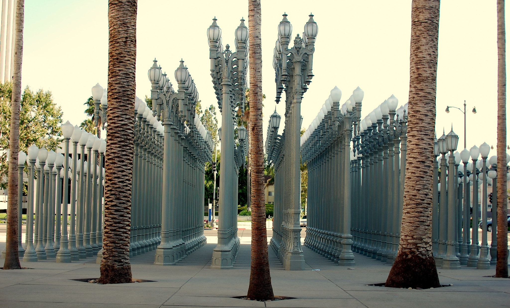

ACTIVITIES
Major Attractions
Here are some of the biggest, touristy things you can do in L.A. It'll probably be packed and there's a greater than 80% chance you're gonna run
into traffic. Do them anyway... well not all of them in one day. Just pick like 3 or 4 from the 10, and if you got extra time then... well you'll
probably be able to squeeze just another in there, but with all that traffic, hey, what can you do?
Arts, Culture, and Entertainment
So these are gonna be my go things to check out when I wanna go see the more artsy side of L.A. Being the entertainment capital of the world,
you're gonna have a lot of choices and places to occupy your time. From street art to museums, there's bound to be something that will end up
peaking your interest and imagination.
Cultural Activities:

Image taken from Flickr
Sightseeing and Outdoor Activities
L.A. isn't all bright lights and movies, the immediate surrounding areas have a lot nature activities for outdoor junkies. Whether you need
some vitamin sea or want to head to Joshua Tree, there's plenty of places to sate your need to check out Southern California's natural beauty.
Here are my top places to go visit when I'm itching to get outside and get fresh air:
Shopping
Is it an L.A. trip without a shopping list? Whether you're into the big designer brands or looking for lowkey, vintage pieces to add to your
collection, L.A. will have what you're looking for. There's going to be some big shopping areas that also require big budgets, but L.A. also has
its fair share of thriftshop options where you're sure to find some hidden gems. No matter what your style is, make sure to go visit some these
places on the list below.

{kind=link}
{kind=link}